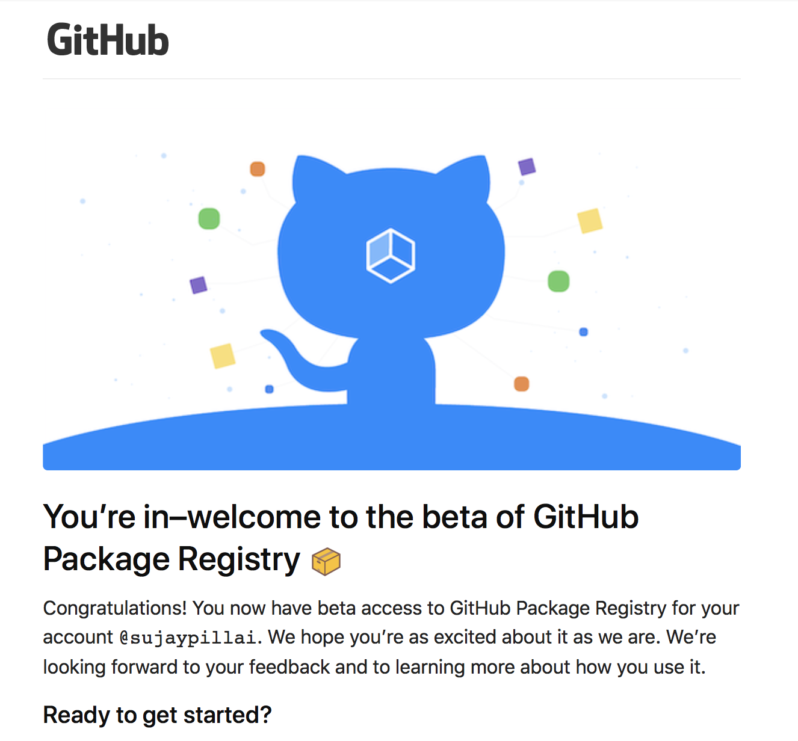
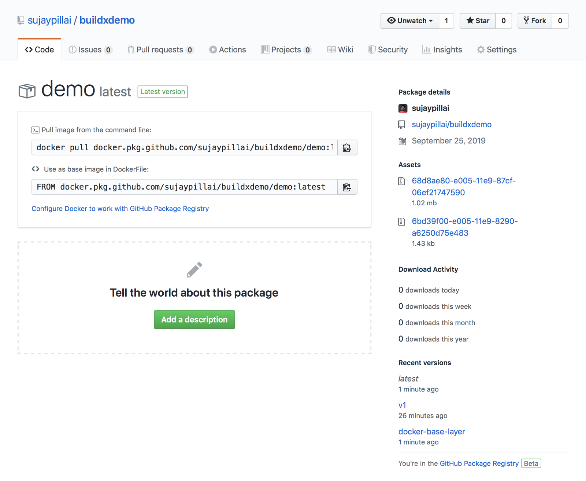
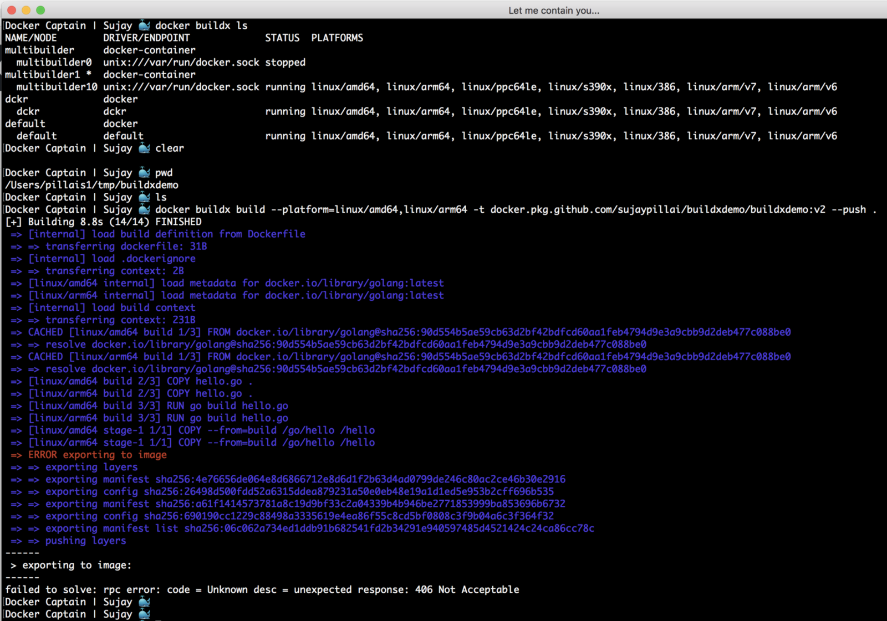

Ever wondered to have your source code and packages in one place?
GitHub Package Registry is a package management service that makes it easy to publish public or private packages next to your source code. It is fully integrated with GitHub, so you can use the same search, browsing, and management tools to find and publish packages as you do for your repositories. You can also use the same user and team permissions to manage code and packages together.
It supports familiar package management tools:
- JavaScript (npm)
- Java (Maven)
- Ruby (RubyGems),
- .NET (NuGet)
- Docker images
Authenticating to GitHub Package Registry
You can use the docker cli to use GitHub Package Registry to publish and retrieve docker images.
|
|
Publishing a package (docker image)
Let’s try to build the docker image for the repository - buildxdemo which has a Dockerfile within the project. After checking out the project execute the docker build
|
|
The tagging of the image should follow the below pattern -
|
|
Because upper case letters aren’t supported, you must use lowercase letters for the repository owner even if the GitHub user or organization name contains uppercase letters. GitHub Package Registry supports multiple top-level Docker images per repository.
Push the image to GitHub Package Registry:
|
|
You can access your packages from this URL by replacing OWNER with your GitHub user or organization name and REPOSITORY with your repository name:
|
|
Package Insights

Docker images hosted on GitHub include details and download statistics, along with their entire history, reference command to pull image from command line and the instruction to use it as base image in Dockerfile.
As Github package registry doesn’t support Image Manifest v2,Schema 2 it doesn’t support multi-arc docker images. Below is the error what I got when trying to build a multi-arc docker image using buildx and push to Github package registry - 
Please upvote this issue on GitHub if you would love to see multi-arc docker image support on Github package registry.